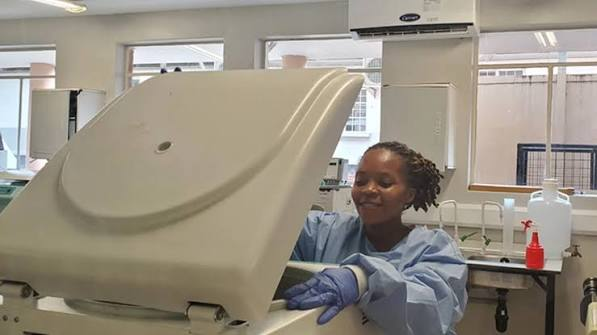

About Us
Institute Record
The Uganda Virus Research Institute (UVRI) is a government biomedical research center in Entebbe, Uganda, focused on viral diseases, public health surveillance, and diagnostic testing.
Mandate: Conducts basic and applied research on communicable and viral diseases (such as HIV/AIDS, Ebola, Marburg, yellow fever, Zika, and influenza), advises the Ministry of Health, and manages clinical trials.

Project Brief
Vision To be a world-class center of excellence in viral and health research.
Mission To conduct scientific investigations on viral diseases, contribute to knowledge, innovation, policy, practice, and capacity strengthening.
Goal To contribute to the reduction of the viral disease burden for improved public health and security.
Core values Professionalism, Ethics, Effectiveness, and Teamwork: Maintaining high standards of competence, integrity, quality, and collaboration across all research and service delivery.

Core Objectives
Scientific Investigation: Conduct robust research on viral and other communicable diseases.
Knowledge & Innovation: Contribute to scientific knowledge, innovations, and evidence-based health policy and practice.
Capacity Strengthening: Build and maintain a skilled workforce and infrastructure for effective research and service delivery.

Milestones: Famous for isolating the Zika virus in 1947 and marking its 90th anniversary while being designated as the East African Community Regional Center of Excellence for Virology.